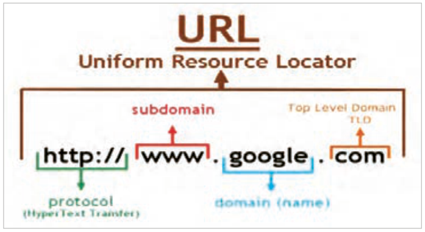

وب دارای مفاهیم کلیدی مختلفی است که آگاهی نسبت به آنها برای هر توسعهدهندۀ وب (Web developer) ضروری است. در ادامه، به شرح این مفاهیم پرداخته میشود:
طراح وب (Web designer): فرد یا تیمی که مسئول طراحی ظاهر نمایشی وب سایت است. این حرفه ترکیبی از طراحی گرافیکی، طراحی تجربه کاربری (UX) و طراحی رابط کاربری (UI)، ایجاد wire frame و نمونه اولیه است.
تجربه کاربری (UX): تجربهای که کاربر بعد از بازدید از وبسایت برای دسترسی به اطلاعات، محصولات و خدمات کسب میکند.
رابط کاربری (UI): عناصر تعاملی صفحه مانند دکمهها، فرمها و منوها که کاربران بهوسیله آنها با وبسایت تعامل دارند.
Front-end: بخشی از وبسایت که ارتباط مستقیمی با کاربر دارد. مباحث بخش فرانتاند شامل ظاهر صفحه وب، رابط کاربری (UI) و تجربه کاربری (UX) میشود.
Back-end: بخش پشتصحنۀ وبسایت یا اپلیکیشن که شامل منطق اصلی برنامه، پردازش دادهها و ارتباط با پایگاه داده است و کاربر تعامل مستقیمی با آن ندارد.
توسعهدهندۀ وب (Web developer): فرد یا تیمی که طرح اولیۀ وبسایت را با استفاده از زبانهای برنامهنویسی، به صفحات وب قابل استفاده تبدیل میکند. توسعهدهندۀ وب میتواند نقش طراح وب را نیز داشته باشد. وظایف اصلی توسعه دهندۀ وب شامل موارد زیرمیباشد:
توسعهدهندۀ سمت کاربر (Front-end-developer): روی ظاهر سایت و عناصری تمرکز دارد که کاربر مستقیماً با آنها سروکار دارد.
توسعهدهندۀ سمت سرور (Back-end-developer): روی مباحث سمت سرور مانند مدیریت پایگاه داده و پردازش دادههای کاربران تمرکز دارد.
دامنه (Domain): نامی منحصربهفرد که برای دسترسی به یک وبسایت استفاده میشود، مانند google.com. کاربران با استفاده از نام دامنه وارد یک سایت میشوند. نام دامنه، جایگزینی قابل فهم برای آدرسهای عددی IP است که بهخاطر سپردن آدرس سایت را برای کاربران سهولت میبخشد.
URL: آدرس منحصربهفردی که برای پیدا کردن و شناسایی یک منبع خاص (مثل صفحه وب، عکس، ویدئو یا فایل) در اینترنت استفاده میشود. URL مخفف Uniform Resource Locator است (شکل2).
صفحه ۸۷
Host: فضایی برای ذخیرهسازی اسناد وبسایت است، بهطوریکه امکان دسترسی به منابع سایت از طریق اینترنت فراهم گردد. تمام فایلهای یک سایت (شامل فایلهای HTML، CSS، اسکریپتها، تصاویر و ...) باید روی یک رایانه وبسرور ذخیره گردند تا کاربران بتوانند با وارد کردن آدرس سایت به محتوای آن دسترسی پیدا کنند.

شکل ۲
Localhost (هاست محلی): یک سیستم رایانهای مجهز به نرمافزار وبسرور است که برای اجرای کدهای سمت سرور (Back-End)، ایجاد و مدیریت پایگاه دادهها استفاده میشود. هاست محلی صرفاً برای تمرین، آزمایش و رفع اشکال صفحات وبسایت کاربرد دارد. نرمافزارهای وبسرور مختلفی وجود دارند که میتوانند یک سیستم خانگی را به وبسرور تبدیل کنند، اما نکته مهم این است که تمام وبسرورهایی که در سطح اینترنت پاسخگوی کاربران هستند، دارای IP اینترنتی هستند؛ بنابراین سیستمهای خانگی و کلاس درس که فاقد IP اینترنت هستند، امکان پاسخدهی به کاربران راه دور را ندارند.
هاست اشتراکی
شرکتهای هاستینگ طرحهای مختلفی را برای ارائه خدمات خود دارند که هر طرح (Plan) دارای امکانات سختافزاری و پهنای باند متفاوتی است. از جمله این طرحها میتوان به هاست اشتراکی، سرور مجازی، سرور اختصاصی و سرور ابری اشاره نمود. در طرح هاست اشتراکی امکانات سختافزاری هاست مانند فضای دیسک، پهنای باند، CPU و حافظه RAM بین چندین وب سایت تقسیم میشود. به این ترتیب تمام توان سختافزاری وبسرور صرف پاسخدهی به درخواستهای کاربران یک سایت نمیشود. به همین دلیل چنین هاستهایی برای سایتهای کوچک با ترافیک محدود مناسب هستند.
صفحه ۸۸
طراحی واکنشگرا (Responsive Design): یک روش طراحی صفحه که امکان تطبیقپذیری خودکار صفحه را بر اساس اندازه صفحه نمایش (دستگاههای مختلف مانند موبایل، تبلت و دسکتاپ) فراهم میکند.
سئو (SEO): مجموعهای از تکنیکها برای بهبود رتبه وبسایت در نتایج موتورهای جستوجو است. سئو شامل بهینهسازی محتوا، ساختار URL و استفاده از متاتگها و ... است.
دسترسپذیری (Accessibility): طراحی وبسایت به گونهای که برای همه کاربران (از جمله افراد دارای ناتوانیهای جسمی یا بینایی) قابل دسترسی باشد.
پایگاهداده: بسیاری از وبسایتها برای ذخیره و مدیریت اطلاعات از پایگاهدادهها (Database) استفاده میکنند. پایگاهدادهها میتواند شامل اطلاعات کاربران، محصولات، مقالات و محتواهای دیگر باشند.
کنترل نسخه: سیستمهای کنترل نسخه امکان مدیریت تغییرات کد را فراهم میکنند، بهگونهای که بازگشت به نسخههای قبلی بهراحتی امکانپذیر باشد.
فرایند طراحی سایت
طراحی و پیادهسازی یک وبسایت، فرایندی مرحلهبهمرحله است که هر مرحله نقش مهمی در موفقیت نهایی پروژه دارد. اگر این مراحل بهدرستی و با ترتیب مناسب انجام شوند، نتیجۀ کار سایتی کاربردی، زیبا و قابل گسترش خواهد بود.
مراحل کلی طراحی سایت
فرایند طراحی سایت بهصورت خلاصه شامل مراحل زیر است:
تعریف هدف و نیازمندیها
طراحی نقشه سایت (site map)
ایجاد وایر فریم (wire frame)
ایجاد ساختار صفحات با HTML
طراحی ظاهر صفحات با CSS
افزودن تعاملات کاربر با JavaScript
طراحی پایگاه داده (مانند جدول کاربران، محصولات و سفارشها)
ایجاد ارتباط بین صفحات و پایگاه داده
افزودن قابلیت ورود و ثبتنام کاربران
پیادهسازی سبد خرید و پرداخت
تست عملکرد سایت
رفع خطاها و بهینهسازی
انتشار سایت روی سرور
صفحه ۸۹
تعریف هدف و نیازمندیها: پیش از شروع طراحی یا نوشتن کد صفحات سایت، باید مشخص شود که وبسایت به چه منظور و برای چه گروهی از کاربران طراحی میشود. شروع طراحی بدون شناخت نیازها و تعیین مأموریت وبسایت، معمولاً باعث بروز مشکلات اساسی در حین پیادهسازی پروژه و نیاز به طراحی مجدد میشود. به همین دلیل، اولین و مهمترین گام در طراحی هر وبسایت، تعریف هدف و نیازمندیهای آن است.
تعیین هدف پروژه: در این مرحله باید به پرسشهای زیر پاسخ داده شود:
هدف از ایجاد سایت چیست؟
چه نوع کالا یا خدماتی در سایت ارائه میشود؟
کاربران اصلی سایت چه کسانی هستند؟
چه امکاناتی باید در سایت وجود داشته باشد؟
تحلیل نیازمندیها: در این مرحله، نیازهای سایت از دو جنبه بررسی میشود:
الف) نیازمندیهای کاربر (User Requirements): این نیازمندیها شامل ویژگیها و امکاناتی است که کاربران در هنگام استفاده از سایت به آنها نیاز دارند (جدول1).
جدول ۱
توضیح
نیاز کاربر
کاربر بتواند حساب کاربری ایجاد کرده و وارد سایت شود.
ثبتنام و ورود
امکان جستوجو براساس نام یا دستهبندی کالا وجود داشته باشد.
جستوجوی محصول
کاربر بتواند محصولات را به سبد خرید اضافه کند.
سبد خرید
فرایند خرید از طریق درگاه پرداخت انجام شود.
پرداخت اینترنتی
کاربر بتواند سفارشهای قبلی خود را مشاهده کند.
مشاهده سفارشها
صفحه ۹۰
ب) نیازمندیهای فنی (Technical Requirements): این نیازمندیها شامل زبانهای نشانهگذاری و برنامهنویسی، سیستم مدیریت پایگاهها و توجه به امنیت و گسترشپذیری وبسایت است (جدول 2).
جدول ۲
توضیح
مورد
Python (Django)
زبان برنامهنویسی
SQLite یا MySQL
پایگاه داده
HTML، CSS، Bootstrap
طراحی ظاهر
رمزنگاری رمز عبور کاربران
امنیت
امکان افزودن محصولات و امکانات جدید در آینده
قابلیت گسترش
طراحی نقشۀ سایت (Site Map): پس از مشخص شدن هدف و نیازهای وبسایت، طراحی نقشۀ سایت امری ضروری است. نقشۀ سایت ساختار صفحات، ارتباطات میان آنها و مسیر حرکت کاربر را درون سایت مشخص میکند. طراحی صحیح نقشۀ سایت موجب درک بهتر ساختار سایت و ساده شدن فرایند طراحی و پیادهسازی آن میگردد.
صفحه ۹۱
طراحی ظاهر صفحات
جدول ۳
ابزارهای طراحی ظاهر سایت (فرانتاند)
کاربرد
زبان
ساختار و عناصر صفحه (مثل متن، تصویر، جدول، دکمه)
HTML
زیباسازی وکنترل ظاهر عناصر شامل تنظیم رنگها، فونتها، اندازهها، چیدمان و ...
CSS
پس از مشخص شدن هدف و نیازمندیها، نوبت آن است که ظاهر صفحات وب سایت طراحی شود. هرچقدر ظاهر سایت زیباتر و منظمتر باشد، کاربران بیشتری جذب سایت خواهند شد. در یک سایت فروشگاهی، زیبایی سایت میتواند منجر به جذب مشتری و فروش بیشتر شود.
برای ایجاد عناصر درون صفحات وب از فرازبان HTML و برای سبکدهی به عناصر صفحه از زبان توصیفی CSS استفاده میشود (جدول3).
صفحه ۹۲
طراحی سایت بهصورت تیمی: فرایند طراحی سایت شامل مراحل متعددی است که هر کدام نیازمند مهارتهای تخصصی هستند. به همین دلیل، طراحی سایت معمولاً بهصورت تیمی انجام میشود و هر عضو مسئولیت مشخصی دارد.
نقشهای اصلی در تیم طراحی سایت
طراح تجربه کاربری (UX Designer): تحلیل نیاز کاربران و بهینهسازی تجربه استفاده از سایت
طراح رابط کاربری (UI Designer): طراحی عناصر بصری مانند رنگها، فونتها، دکمهها و فرمها
توسعهدهندۀ فرانتاند (Front-End Developer): پیادهسازی بخش ظاهری و تعاملی سایت
توسعهدهندۀ بکاند (Back-End Developer): برنامهنویسی سمت سرور، مدیریت پایگاه داده و امنیت
متخصص محتوا (Content Specialist): تحقیق کلمات کلیدی و تولید محتوای متنی جذاب
متخصص سئو (SEO Specialist): بهینهسازی سایت برای موتورهای جستوجو
بسته به حجم کار پروژه، بودجه و تعداد نفرات تیم طراح و توسعهدهنده وبسایت، هر نقش میتواند به یک یا چند نفر اختصاص داده شود. در پروژههای کوچک ممکن است یک فرد چندین نقش را بر عهده داشته باشد. در جدول 4 ابزارهای متداول مورد استفاده توسط هر یک از نقشهای تیم طراحی سایت معرفی شده است. این ابزارها به بهبود کیفیت پروژه و تسهیل همکاری بین اعضای تیم کمک میکنند.
جدول ۴: ابزارهای متداول در طراحی سایت
نقش
ابزارها
طراح UX و UI
Photoshop، InVision، Sketch، Adobe XD، Figma
توسعهدهندۀ فرانتاند
Bootstrap، JavaScript، CSS، HTML
توسعهدهندۀ بکاند
JavaScript (Node.js)، (Flask، Python، Django)
ویرایشگر کد
Atom، Sublime Text، Visual Studio Code
مرورگر و ابزار توسعه
Microsoft Edge، Mozilla Firefox، Google Chrome
پلتفرمهای مدیریت محتوا و تولید محتوای تحت وب
Grammarly، Google Docs، WordPress
متخصص سئو
Yoast SEO، Moz، SEMrush، Google Analytics
سایر ابزار مورد استفاده تیم طراحی
Cyberduck، FileZilla
کنترل نسخه
GitHub، Git
Page 86
Some key concepts of web design
The web has several key concepts that every web developer (Web developer) needs to know. They are described below:
Web designer: a person or team responsible for designing the visual look of the website. This profession is a combination of graphic design, user experience (UX) design and user interface (UI) design, and creating wireframes and prototypes.
User experience (UX): the experience a user gets after visiting a website in accessing information, products and services.
User interface (UI): the interactive elements of a page, such as buttons, forms and menus, with which users interact with the website.
Front-end: the part of a website that deals directly with the user. Front-end topics include the look of the web page, the user interface (UI), and the user experience (UX).
Back-end: the behind-the-scenes part of a website or app, which includes the main program logic, data processing, and the connection to the database; the user does not interact with it directly.
Web developer: a person or team that turns the initial design of a website into usable web pages using programming languages. A web developer can also play the role of the web designer. The main duties of a web developer include the following:
Front-end developer: focuses on the look of the site and the elements the user deals with directly.
Back-end developer: focuses on server-side matters such as managing the database and processing the users' data.
Domain: a unique name used to reach a website, such as google.com. Users enter a site by using the domain name. The domain name is an understandable substitute for numeric IP addresses, which makes remembering the address of a site easy for users.
URL: a unique address used to find and identify a particular resource (such as a web page, image, video, or file) on the internet. URL stands for Uniform Resource Locator (Figure 2).
Page 87
Host: a place for storing the documents of a website so that the site's resources can be reached over the internet. All the files of a site (including HTML files, CSS files, scripts, images and so on) must be stored on one web-server computer so that users can reach its content by entering the site's address.
Figure 2
Localhost: a computer system equipped with web-server software that is used for running server-side (Back-End) code and for creating and managing databases. A localhost is only useful for practising, testing and debugging the pages of a website. There are various web-server programs that can turn a home system into a web server, but the important point is that all the web servers that answer users on the internet have an internet IP; therefore home and classroom systems that have no internet IP cannot answer remote users.
Shared hosting
Hosting companies offer different plans, each (Plan) with different hardware and bandwidth. Among these plans are shared hosting, virtual servers, dedicated servers, and cloud servers. In a shared hosting plan, the host's hardware, such as disk space, bandwidth, CPU, and RAM, is divided among several websites, so the web server's full power is not spent on answering the users of one site. That is why such hosts suit small sites with limited traffic.
Page 88
Responsive Design: a method of page design that lets the page adapt automatically to the size of the screen (different devices such as mobile, tablet and desktop).
SEO: a set of techniques to improve a website's rank in the results of search engines. SEO includes optimising the content, the URL structure, the use of meta tags and so on.
Accessibility: designing a website so that it can be reached by all users (including people with physical or visual disabilities).
Database: many websites use databases (Database) to store and manage information. Databases can hold information about users, products, articles, and other content.
Version control: version control systems manage changes to code so that you can easily go back to earlier versions.
The site design process
Designing and building a website is a step-by-step process in which every step matters for the final success of the project. If the steps are done correctly and in the right order, the result is a useful, attractive site that can grow.
The overall steps of site design
In short, the site design process includes these steps:
Define the goal and the requirements
Design the site map (site map)
Create a wire frame (wire frame)
Build the page structure with HTML
Design the look of the pages with CSS
Add user interaction with JavaScript
Design the database (such as tables of users, products, and orders)
Connect the pages to the database
Add user login and sign-up
Build the shopping cart and payment
Test how the site works
Fix errors and optimize
Publish the site on a server
Page 89
Define the goal and requirements: before starting the design or writing the code of the site's pages, you must decide what the website is for and which group of users it serves. Starting the design without knowing the needs and the website's mission usually causes serious problems during the project and the need to redesign. So the first and most important step in designing any website is defining its goal and requirements.
Setting the project goal: in this step these questions must be answered:
What is the purpose of the site?
What kind of goods or services does the site offer?
Who are the site's main users?
What features must the site have?
Analyzing the requirements: in this step the site's needs are examined from two sides:
a) User Requirements: these requirements include the features and facilities users need when using the site (Table 1).
Table 1
Description
User need
The user can create an account and log in to the site.
Sign-up and login
Products can be searched by name or category.
Product search
The user can add products to the shopping cart.
Shopping cart
Purchases are paid through a payment gateway.
Online payment
The user can see their previous orders.
Viewing orders
Page 90
b) Technical Requirements: these requirements include the markup and programming languages, the database management system, and attention to the security and extensibility of the website (Table 2).
Table 2
Description
Item
Python (Django)
Programming language
SQLite or MySQL
Database
HTML, CSS, Bootstrap
Look and design
Encrypting users' passwords
Security
The ability to add new products and features in the future
Extensibility
Designing the site map: after the goal and needs of the website are clear, designing the site map is essential. The site map shows the structure of the pages, the connections between them and the user's path inside the site. A correct site map gives a better understanding of the structure of the site and simplifies the process of designing and implementing it.
Page 91
Designing the look of the pages
Table 3
Tools for designing the look of a site (front-end)
Use
Language
The structure and elements of the page (such as text, images, tables, buttons)
HTML
Beautifying and controlling the look of the elements, including adjusting colours, fonts, sizes, layout and so on.
CSS
Once the goal and requirements are clear, it is time to design the look of the website's pages. The more attractive and orderly a site looks, the more users it attracts. In a shopping site, a beautiful site can bring in more customers and more sales.
The HTML markup language is used to create the elements of web pages, and the CSS style language is used to style them (Table 3).
Page 92
Designing a site as a team: the site design process has many steps, each of which needs special skills. That is why sites are usually designed by a team in which each member has a clear responsibility.
The main roles in a site design team
UX Designer: analysing the users' needs and optimising the experience of using the site
UI Designer: designing visual elements such as colours, fonts, buttons and forms
Front-End Developer: implementing the visual and interactive part of the site
Back-End Developer: server-side programming, database management and security
Content Specialist: researching keywords and producing attractive text content
SEO Specialist: optimising the site for search engines
Depending on the size of the project, the budget, and the number of people in the design and development team, each role can be given to one or more people. In small projects one person may take on several roles. Table 4 lists the tools commonly used by each role in a site design team. These tools help improve the quality of the project and make teamwork easier.